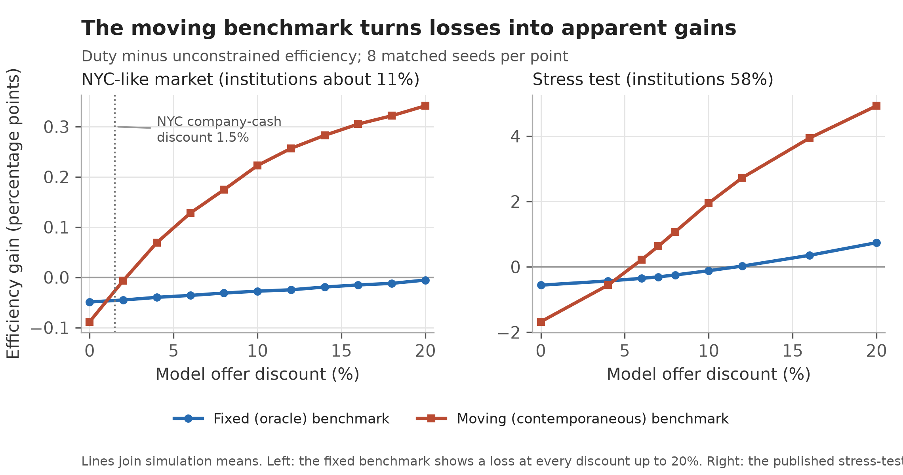

The question
How should a simulation compare allocation rules when the rules change who remains in the queue or who enters the denominator? A ratio can improve while total realised value falls, and an access ranking can change when it is measured over a fixed entry cohort.
The paper uses an exact two-period example, a deadline queue, a published liver-allocation simulator and a controlled housing illustration. Its reporting check compares saved totals and makes the reference and population explicit.
Main findings
- 2.2% vs no crossingin the main proxy market, the moving efficiency ratio crosses zero near a 2.2% offer discount; the fixed comparison remains negative at every tested discount up to 20%
- 0.75–2.5×cohort access gains relative to full-run gains in the main-market target experiments; changing the population can also reorder the instruments
- 2rankings of the same instruments: calibrated to the same full-run access target, a constant charge keeps more value than the duty; calibrated to the same cohort target, the duty keeps slightly more
- 9.8% → 9.5%owner-occupiers who leave without buying at New York City proxy values, and with the cash discount removed: a comparison within the illustrative model


Why it matters
- Policies aimed at institutional or cash buyers are usually judged by an access number and an efficiency number. How each is measured can decide which policy looks best.
- An efficiency benchmark computed over the buyers still waiting moves with the policy itself. A two-period example in the paper shows why.
- Following an entry cohort to purchase or exit can change the measured effects and the ranking of instruments.
What the results can tell us
The housing exercise illustrates benchmark and cohort accounting mechanisms. It is not a calibrated forecast or a policy ranking for New York City. Two inputs use NYC records, while supply, arrivals, patience, and valuations remain stylized. Companies paying cash are a proxy for certain institutional buyers; the category includes LLCs used by individuals and does not measure closing certainty. The main comparisons hold offers fixed. Renters’ welfare and administrative costs are outside the model, so its rankings are conditional results. The earlier benchmark-audit note develops the diagnostic in housing and service-queue examples. Its content is incorporated in this paper; its PDF and audit files remain available together below.
Run the audit checks
Download the replication package (ZIP, 13.58 MB). Extract it into an empty folder and run:
python3 reproduce_review.py
The standard-library command checks saved housing totals and table rows, the exact deadline queue, the comparison record, the five paired LivSim summaries, regional-denominator accounting and independent entry-cohort recounts from synthetic event logs. It runs offline and does not start a simulator. Matching calculations does not establish empirical validity.
In the LivSim accounting check, holding status-quo regional denominators fixed shifts the year-three mortality-disparity comparison by +5.5 percentage points (paired SE 1.5). Holding sharing denominators fixed shifts it by +0.2 (SE 1.0). These are reference-dependent accounting summaries, not clinical policy effects.
Manuscript sources (ZIP, 1.69 MB) rebuild the PDFs with Pandoc and Typst. Online Supplement (PDF, 13 pp.) contains the proofs of Theorem 1 and Proposition 1, the 50-replication priority-triage offered-load grid, extended housing tables, and Supplement S1 (the excluded PolicySpace2 investigation). For optional deliberate LivSim model replay, the separate synthetic inputs (ZIP, 59.29 MB) and replay instructions are supplied. The fast check does not need that larger archive.
START_HERE.md, revision notes describe the release. No new simulations were run for this update. PolicySpace2 remains unreproduced and outside the paper's evidence and conclusions.
Archived benchmark note and audit files
Auditing policy dependent benchmarks in allocation simulations was incorporated into When the Benchmark Moves with the Policy. Cite the current methods paper (v7.13) for those results. Its archive includes the initial PolicySpace2 instrumentation patch and per-seed summaries; see Appendix I and the Online Supplement (Section S1) in version 7.13 for its excluded status and failed-replay investigation.
Cite this paper
BibTeX citation
@misc{loschi2026wedge,
author = {Loschi, Pablo},
title = {When the Benchmark Moves with the Policy: Measuring Access
in Allocation Simulations},
year = {2026},
howpublished = {Working paper and audit archive, Zenodo},
version = {7.13},
doi = {10.5281/zenodo.24516898}
}